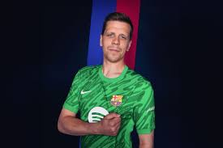
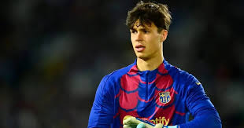

Porteros
Marc-André ter Stegen
Portero
1

Partidos Jugados: 0
Porterías a 0: N/A
Edad: 33 años
Nacionalidad: Alemania
Desde: 2014
Estado: Lesión de larga duración
Eder Aller
Portero
33

Partidos Jugados: 0
Porterías a 0: N/A
Edad: 19 años
Nacionalidad: España
Desde: 2025
Wojciech Szczęsny
Portero
25

Partidos Jugados: 2
Porterías a 0: 0
Edad: 35 años
Nacionalidad: Polonia
Desde: 2024
Diego Kochen
Portero
31

Partidos Jugados: 0
Porterías a 0: N/A
Edad: 20 años
Nacionalidad: Estados Unidos
Desde: 2023
Joan García
Portero
13

Partidos Jugados: 7
Porterías a 0: 3
Edad: 25 años
Nacionalidad: España
Desde: 2025